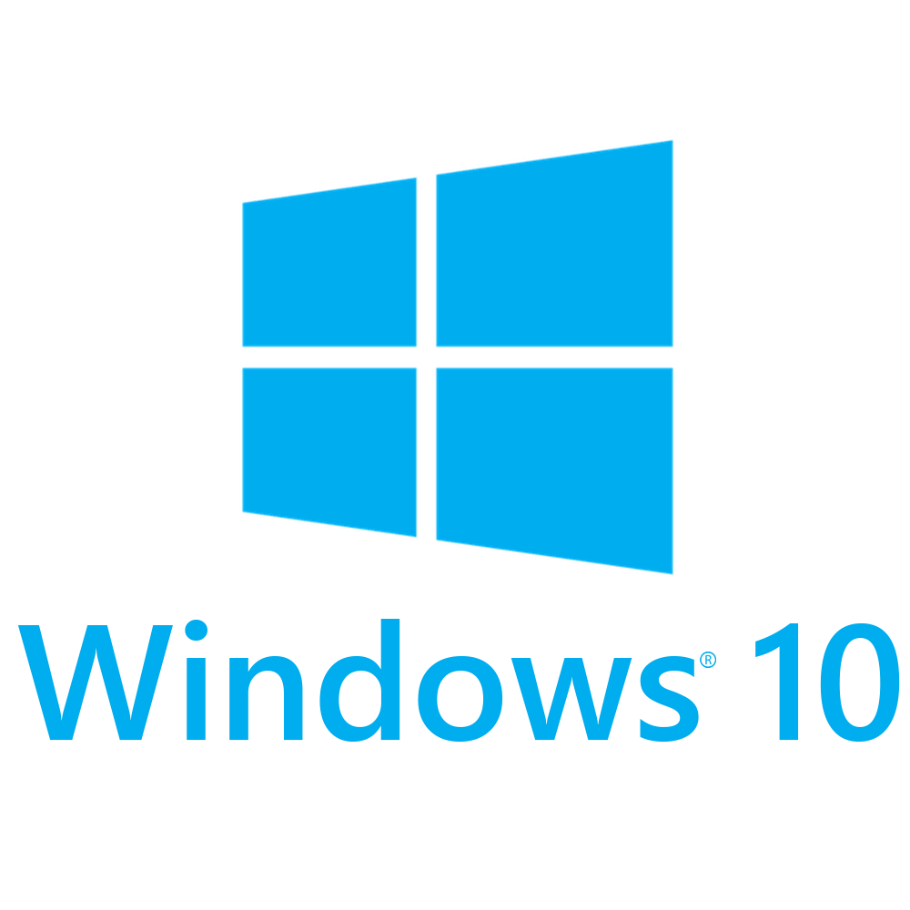
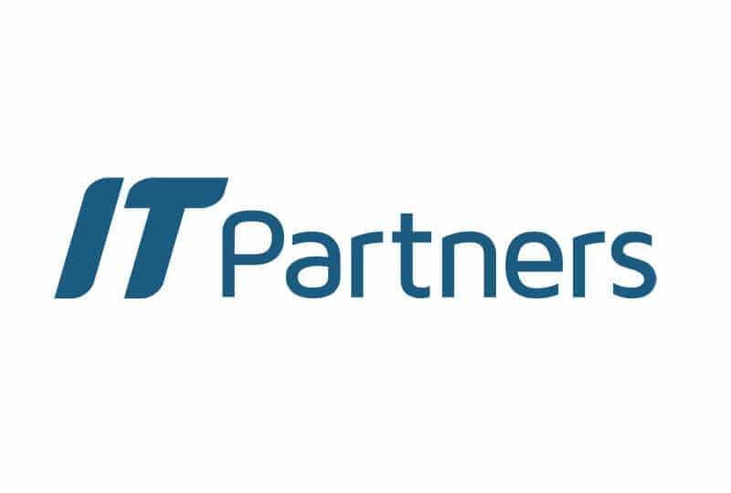

Dossier de Réalisations Professionnelles
Recherches Métiers / CV / Mail Motivé / Entretien
Projet TerminéPériode : Du 03/09/2025 au 05/11/2025
CONTEXTE ET OBJECTIFS
Ce projet d'insertion m'a placé dans une posture de candidat actif. L'enjeu majeur était de structurer ma démarche de recherche de stage en élaborant des outils de communication professionnelle (CV, lettre de motivation) et en simulant des entretiens de recrutement.
CADRE DE LA DEMANDE
Il s'agit d'un projet encadré au sein de mon cursus scolaire, visant à me préparer concrètement aux étapes de recrutement pour un stage, une alternance ou un futur emploi post-diplôme.
CAHIER DES CHARGES
- Élaboration d'un CV spécialisé pour le secteur IT.
- Rédaction d'un mail d'approche motivé.
- Simulation et préparation aux questions d'entretien.
- Conception d'un support visuel (diaporama) de présentation individuelle.
- Analyse approfondie des débouchés métiers du BTS SIO.
RESSOURCES EXPLOITÉES
- Référentiels et guides de rédaction de CV.
- Modèles de correspondance professionnelle.
- Documentation métier sur le secteur informatique.
- Témoignages et retours d'expériences d'anciens étudiants.
MÉTHODOLOGIE ET ACTIONS
La démarche a débuté par une phase de veille sur les métiers de l'informatique liés au BTS SIO. J'ai ensuite procédé à la rédaction technique de mes outils de candidature, suivie d'une phase de préparation orale s'appuyant sur un diaporama personnel.
DIFFICULTÉS
- Réussir à se démarquer dans un secteur très concurrentiel.
- Capacité de synthèse pour faire tenir mon parcours sur une seule page de CV.
- Ajustement du ton et de la posture selon l'interlocuteur visé.
ACQUIS ET VALEUR AJOUTÉE
- Maîtrise des techniques de recherche d'emploi spécifiques à l'IT.
- Optimisation de ma communication écrite et orale.
- Capacité à pitcher mon projet professionnel de manière convaincante.
AVIS PERSONNEL
J'ai abordé ce projet comme une véritable étude de marché appliquée à mon propre profil. L'exercice le plus enrichissant a été de traduire mes expériences en atouts concrets sur le papier. Grâce à l'entraînement aux entretiens, j'ai acquis une meilleure aisance orale, un élément indispensable pour convaincre les recruteurs lors de mes prochaines recherches.
Création d'un site web vitrine
Projet TerminéPériode : Du 09/2025 au 01/2026
CONTEXTE ET OBJECTIFS
Dans le cadre de mon cursus en BTS SIO, j'ai eu pour mission de concevoir un site web vitrine servant de portfolio professionnel. Mon rôle a consisté à piloter le projet de A à Z : de la réflexion sur l'ergonomie à la mise en ligne, afin de présenter de manière structurée mes compétences et mes travaux.
CADRE DE LA DEMANDE
Il s'agit d'une demande interne liée au BTS SIO SISR, dont l'objectif est de fournir aux étudiants un support numérique pour valoriser leur parcours lors des recherches de stage.
LISTE DES BESOINS
- Répertorier mon parcours académique et mes aptitudes.
- Assurer une visibilité constante via un hébergement web.
- Développer une interface moderne s'adaptant à tous les écrans (responsive).
- Garantir une navigation fluide entre les différentes pages.
DOCUMENTS FOURNIS
- Cahier des charges fonctionnel.
- Veille sur des exemples de portfolios existants.
MÉTHODOLOGIE ET ACTIONS
- Élaboration du squelette sémantique des pages (HTML).
- Création d'une identité visuelle personnalisée (CSS).
- Mise en œuvre d'éléments interactifs simples.
- Travail sur le référencement et la rapidité d'affichage.
- Organisation du site vers une structure multi-pages pour plus de clarté.
DIFFICULTÉS
- Ajustement du design pour garantir un affichage optimal sur mobile.
- Optimisation du poids des médias pour ne pas ralentir le site.
- Gestion technique des modes jour et nuit.
ACQUIS ET VALEUR AJOUTÉE
- Renforcement de mes connaissances en langages web (HTML/CSS).
- Sensibilisation aux principes d'accessibilité numérique.
- Utilisation efficace de l'IA Gemini pour résoudre des points bloquants de code.
AVIS PERSONNEL
Ce projet a été l'occasion de sortir de ma zone de confort habituelle liée aux systèmes et réseaux. J'ai compris que la création d'un site ne s'arrête pas au design, mais repose sur une architecture logique rigoureuse. Cette double compétence me permet de mieux saisir les enjeux de communication entre les services applicatifs et l'infrastructure qui les supporte.
Réponse à un appel d'offres de PC
Projet TerminéPériode : Du 10/2025 au 11/2025
CONTEXTE ET OBJECTIFS
Dans le cadre de ma formation, j'ai été sollicité pour élaborer une proposition technique et commerciale en réponse à un appel d'offres fictif. L'enjeu était de concevoir l'équipement informatique complet pour une salle de classe, en endossant le rôle de technicien conseil chargé de fournir une solution optimisée et chiffrée.
CADRE DE LA DEMANDE
Simulation d'une demande émanant d'une PME souhaitant transformer un espace de travail classique en une salle informatique fonctionnelle et performante.
CAHIER DES CHARGES
- Interprétation approfondie des exigences du cahier des charges client.
- Sélection rigoureuse de composants hardware répondant aux besoins métiers.
- Respect impératif de l'enveloppe budgétaire allouée.
- Argumentation technique pour valider la pertinence des choix effectués.
- Formalisation d'une proposition commerciale de haut niveau professionnel.
RESSOURCES EXPLOITÉES
- Cahier des charges de l'appel d'offres.
- Catalogues et bases de données de fournisseurs informatiques.
MÉTHODOLOGIE ET ACTIONS
- Audit et analyse critique du cahier des charges.
- Veille technologique et étude comparative de solutions matérielles.
- Élaboration de la proposition technique détaillée.
- Structuration et calcul précis du devis.
- Soutenance de la solution devant le client.
DIFFICULTÉS
- Optimisation du rapport performance/prix sous contraintes financières fortes.
- Vulgarisation et justification des choix techniques pour un public non expert.
ACQUIS ET VALEUR AJOUTÉE
- Expertise dans la réponse structurée aux appels d'offres.
- Maîtrise des outils d'élaboration de devis et de facturation.
- Renforcement des capacités en argumentation technique et communication écrite.
AVIS PERSONNEL
Cette mission m'a fait réaliser que le rôle d'un technicien dépasse la simple technique ; il doit aussi être un conseiller capable d'équilibrer les besoins et le budget. L'élaboration du devis m'a forcé à justifier chaque composant choisi par des arguments concrets, une compétence essentielle pour gagner la confiance d'un client et valider une solution sur mesure.
Appel d'offres et câblage
Projet TerminéPériode : Du 11/2025 au 12/2025
CONTEXTE ET OBJECTIFS
Dans le cadre d'un projet de modernisation d'infrastructure, j'ai occupé le poste de technicien réseau chargé de l'ingénierie de câblage. L'objectif était de concevoir une infrastructure de câblage structuré complète pour transformer une salle de cours standard en un laboratoire informatique opérationnel.
CADRE DE LA DEMANDE
Simulation d'un appel d'offres scolaire portant sur la réhabilitation technique d'un espace pédagogique au sein d'un établissement d'enseignement secondaire.
CAHIER DES CHARGES
- Déploiement d'un réseau physique pour 20 stations de travail.
- Implémentation et organisation d'une baie de brassage centralisée.
- Garantie de conformité aux standards internationaux EIA/TIA.
- Optimisation des coûts pour respecter l'enveloppe budgétaire définie.
RESSOURCES EXPLOITÉES
- Plans d'implantation de la salle et du local technique.
- Cahier des Clauses Techniques Particulières (CCTP).
- Documentation normative sur le câblage structuré.
MÉTHODOLOGIE ET ACTIONS
- Audit et analyse critique des besoins exprimés dans le cahier des charges.
- Étude de dimensionnement de l'infrastructure physique.
- Sourcing et sélection de composants passifs (baies, panneaux, câbles).
- Élaboration du dossier technique de réponse incluant les schémas de câblage.
- Présentation orale et argumentation de l'architecture préconisée.
DIFFICULTÉS
- Application stricte des contraintes normatives de câblage structuré.
- Calcul précis de l'encombrement pour le dimensionnement de la baie de brassage.
- Optimisation du cheminement des câbles pour limiter les interférences.
ACQUIS ET VALEUR AJOUTÉE
- Maîtrise opérationnelle des standards de câblage réseau.
- Capacité de dimensionnement d'infrastructures passives complexes.
- Compétences en production de plans techniques et de devis détaillés.
AVIS PERSONNEL
L'immersion dans ce scénario de chantier réseau a été une expérience marquante de ma formation. Elle m'a confronté aux contraintes techniques et logistiques que l'on rencontre sur le terrain. L'aspect le plus enrichissant a été d'apprendre à mettre en adéquation les besoins théoriques avec les impératifs de conformité, garantissant ainsi une installation sécurisée et performante.
Réseau poste à poste & gestion Windows 10
Projet TerminéPériode : Du 20/11/2025 au 22/01/2026

CONTEXTE ET OBJECTIFS
Dans le cadre de cette mission d'administration sous environnement Windows, mon rôle a consisté à configurer une infrastructure décentralisée (P2P). L'enjeu était de mettre en place un environnement collaboratif sécurisé tout en élaborant des procédures d'administration détaillées pour faciliter la gestion future par les utilisateurs finaux.
CADRE DE LA DEMANDE
Projet pédagogique simulant le déploiement d'un réseau de type "Workgroup" pour une petite structure, nécessitant une gestion rigoureuse des accès et des ressources partagées sous Windows 10.
CAHIER DES CHARGES
- Déploiement d'une architecture réseau poste à poste opérationnelle.
- Structuration et administration des comptes utilisateurs et des groupes de travail.
- Implémentation de services de partage avec gestion fine des permissions NTFS.
- Production d'un corpus documentaire technique exhaustif.
RESSOURCES EXPLOITÉES
- Référentiels techniques et aide en ligne Microsoft Windows 10.
- Protocole de travaux pratiques d'administration système.
MÉTHODOLOGIE ET ACTIONS
- Initialisation et interconnexion des stations de travail en réseau local.
- Hiérarchisation des données et configuration des points de partage réseau.
- Définition des listes de contrôle d'accès (ACL) via le système NTFS.
- Élaboration de supports didactiques (tutoriels) couvrant la gestion des privilèges et des comptes.
DIFFICULTÉS
- Assimilation des nuances techniques entre droits de partage et permissions NTFS.
- Administration des mécanismes d'héritage sur des arborescences de fichiers complexes.
- Rédaction d'une documentation technique claire, précise et exploitable par tous.
ACQUIS ET VALEUR AJOUTÉE
- Expertise renforcée en administration de stations de travail Windows 10.
- Maîtrise des protocoles de sécurisation des données locales et distantes.
- Développement d'aptitudes à la vulgarisation technique par la documentation.
- Expérience enrichissante de collaboration technique en binôme.
AVIS PERSONNEL
Ce travail sur l'environnement poste à poste a renforcé ma maîtrise des systèmes Microsoft. La rédaction des tutoriels a été l'étape la plus formatrice : elle m'a obligé à anticiper les besoins des futurs administrateurs et à valider chaque paramètre de sécurité. C'est en transformant des concepts abstraits en procédures concrètes que j'ai réellement consolidé mes bases en administration système.
YUMI – Clé bootable multifonction
Projet TerminéPériode : Du 26/01/2026 au 11/03/2026
CONTEXTE ET OBJECTIFS
Dans le cadre d'un projet pluridisciplinaire, j'ai occupé les fonctions de chef de projet technique. Ma mission consistait à concevoir une solution de stockage amovible multifonction (Live USB), destinée à répondre à des problématiques variées de maintenance, de diagnostic système et de dépannage informatique.
CADRE DE LA DEMANDE
Demande interne scolaire — projet encadré visant l'apprentissage de la gestion de projet opérationnelle et la maîtrise des outils de maintenance logicielle.
CAHIER DES CHARGES
- Développement d'une unité bootable intégrant une suite d'utilitaires.
- Étude comparative et sélection de solutions de gestion de coffres-forts numériques.
- Formalisation technique de l'intégralité du processus de création.
- Soutenance du projet via un support de présentation structuré.
RESSOURCES EXPLOITÉES
- Documentation technique officielle de la solution YUMI.
- Inventaire des outils de diagnostic et de maintenance préconisés.
- Directives et cahier des charges pédagogiques.
MÉTHODOLOGIE ET ACTIONS
- Analyse et définition des besoins fonctionnels.
- Réalisation d'un banc d'essai comparatif sur les gestionnaires de mots de passe.
- Création de supports didactiques et rédaction de correspondances professionnelles.
- Configuration de la clé multiboot et intégration des images ISO.
- Phases de tests et pilotage de l'avancement du projet (planning et livrables).
DIFFICULTÉS
- Résolution de problèmes d'interopérabilité entre certains utilitaires et le moteur de boot.
- Production d'une analyse comparative objective et rigoureusement documentée.
- Arbitrage et gestion du temps sur une mission comportant de multiples tâches simultanées.
ACQUIS ET VALEUR AJOUTÉE
- Expertise dans l'utilisation de solutions multiboot et d'outils de maintenance système.
- Aptitude à l'évaluation critique et comparative de solutions logicielles.
- Compétences en management de projet (gestion des délais et des rendus).
- Sensibilisation accrue aux enjeux de cybersécurité et de gestion des identifiants.
AVIS PERSONNEL
La réalisation de cette solution multiboot m'a permis de développer une vision très concrète des outils de maintenance. Ce qui a le plus enrichi ma réflexion reste l'étude sur la gestion des accès : c'est un sujet pilier de ma formation. J'en retire qu'un bon technicien doit non seulement maîtriser ses outils de dépannage, mais aussi être le garant de la sécurité des authentifications au sein de son parc.
Refonte réseau Brocker'Info — Commutation & Routage
Projet TerminéPériode : Du 17/03/2026 au 02/04/2026

CONTEXTE ET OBJECTIFS
Réalisé en classe dans le cadre de ma formation BTS SIO SISR, ce projet consistait à piloter la restructuration globale de l'architecture réseau de la PME fictive Brocker'Info. En tant qu'administrateur réseau, ma mission portait sur la conception et l'implémentation de solutions avancées de commutation, de routage et de traduction d'adresses (NAT) afin d'optimiser les performances et la scalabilité du système.
CADRE DE LA DEMANDE
Projet pédagogique réalisé en classe — simulation d'une refonte du réseau local d'une PME fictive, visant à mettre en pratique les notions de segmentation réseau et de routage avancé abordées en cours.
CAHIER DES CHARGES
- Segmentation du trafic via la création de domaines de diffusion (VLAN).
- Configuration et optimisation du routage inter-VLAN.
- Automatisation de la gestion des VLANs par le protocole VTP.
- Centralisation des sauvegardes de configurations sur serveur TFTP.
- Mise en œuvre du NAT pour l'accès sécurisé au réseau public.
RESSOURCES EXPLOITÉES
- Audit de l'architecture réseau préexistante.
- Cahier des charges technique du prestataire IT Partner.
- Consignes de paramétrage des équipements actifs (Cisco).
MÉTHODOLOGIE ET ACTIONS
- Analyse des flux métiers et définition de la nouvelle topologie.
- Simulation complète de l'architecture sous Cisco Packet Tracer.
- Sécurisation des accès distants (VTY) et mise en place de bannières légales.
- Déploiement du domaine VTP et affectation dynamique des ports aux VLANs.
- Migration de la configuration vers le matériel physique et tests de production.
- Rédaction d'un rapport technique et d'une notification de fin d'intervention pour le client.
DIFFICULTÉS
- Assurer la synchronisation et la cohérence du domaine VTP entre les commutateurs.
- Gestion technique rigoureuse des liaisons de type Trunk vs Access.
- Maîtrise de la translation d'adresses (NAT Overload/PAT) sur routeur Cisco 1841.
- Fiabilisation des transferts de fichiers de configuration via le protocole TFTP.
ACQUIS ET VALEUR AJOUTÉE
- Expertise en configuration d'équipements actifs Cisco en environnement réel.
- Maîtrise des protocoles de gestion et de sauvegarde (VTP, TFTP).
- Capacité à mener une simulation avancée avant mise en production.
- Compétences en routage avancé et translation d'adresses publiques/privées.
AVIS PERSONNEL
Ce projet en classe a transformé ma vision de la commutation et du routage. Travailler sur un scénario réaliste comme Brocker'Info m'a permis de donner du sens à mes apprentissages théoriques. J'ai particulièrement apprécié la mise en œuvre de la translation d'adresses (NAT), car c'est un mécanisme pilier qui fait le pont entre le réseau local sécurisé et l'accès au web, rendant les concepts de routage avancés beaucoup plus concrets et tangibles.